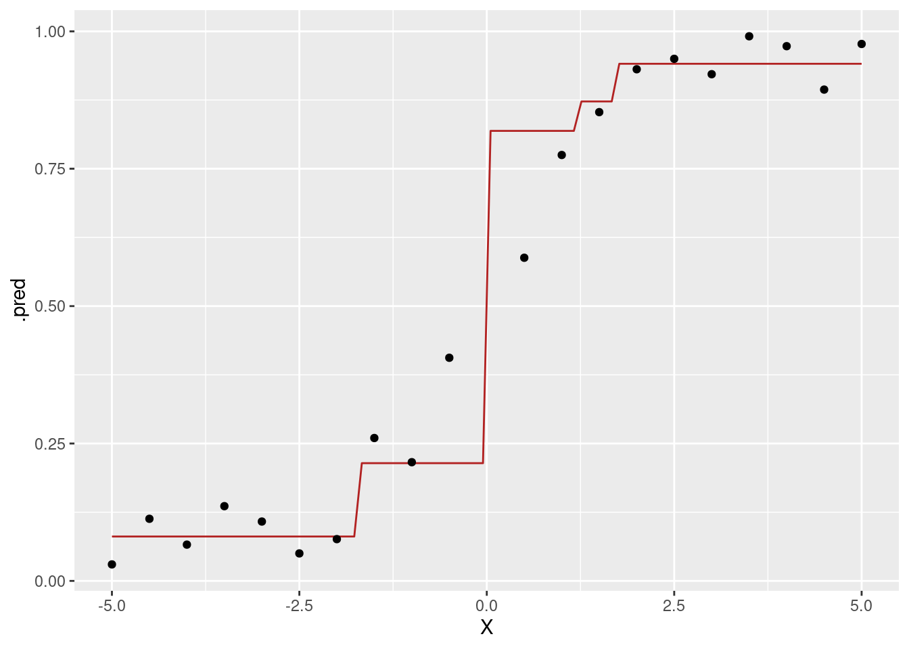

Load data and convert outcome to be a factor variable because we are going to develop classifier.
dat <-read_csv("data/ch10_dat1.csv") |>mutate(Y =factor(Y))
Rows: 5 Columns: 5
── Column specification ────────────────────────────────────────────────────────
Delimiter: ","
chr (4): X1, X2, X3, Y
dbl (1): X4
ℹ Use `spec()` to retrieve the full column specification for this data.
ℹ Specify the column types or set `show_col_types = FALSE` to quiet this message.
dat
# A tibble: 5 × 5
X1 X2 X3 X4 Y
<chr> <chr> <chr> <dbl> <fct>
1 yes male yes 72 yes
2 yes female no 73 no
3 no male no 70 no
4 no male no 75 yes
5 yes female yes 58 no
10.1.2 Train a random forest classifier
Let us follow a typical workflow creation process.
10.1.2.1 Reciple
X1, X2 and X3 are categorical variables, so create a recipe to to convert them to factor. You can use all_string_predictors() instead of listing every character-type input variables.
rf_rec <-recipe(Y ~ ., data = dat) |>step_string2factor(all_string_predictors())
10.1.2.2 Model
Use rand_forest() to define a random forest model. Random forest model consumes three parameters:
mtry: the number of variables to be considered in each split
trees: the number of trees to be created
min_n: the minimum number of observations in a node to be candidate for further split
Set mtry = 2, trees = 4, and min_n = 2 for this example with tiny data. When you are dealing with a large and complex data, it would be better to use larger parameter values, especially for mtry and trees.
Default engine is from {ranger} package.
rf_model <-rand_forest(mtry =2, trees =4, min_n =2) |>set_engine("ranger") |>set_mode("classification")
10.1.2.3 Workflow
Define a workflow by combining a recipe and a model.
Call fit() function to estimate the random forest classifier.
rf_fit <- rf_wflow |>fit(dat)rf_fit
══ Workflow [trained] ══════════════════════════════════════════════════════════
Preprocessor: Recipe
Model: rand_forest()
── Preprocessor ────────────────────────────────────────────────────────────────
1 Recipe Step
• step_string2factor()
── Model ───────────────────────────────────────────────────────────────────────
Ranger result
Call:
ranger::ranger(x = maybe_data_frame(x), y = y, mtry = min_cols(~2, x), num.trees = ~4, min.node.size = min_rows(~2, x), num.threads = 1, verbose = FALSE, seed = sample.int(10^5, 1), probability = TRUE)
Type: Probability estimation
Number of trees: 4
Sample size: 5
Number of independent variables: 4
Mtry: 2
Target node size: 2
Variable importance mode: none
Splitrule: gini
OOB prediction error (Brier s.): 0.75
10.1.3 Use different engine
{randomForest} is a R package that first came in 2002. If you use this engine instead of the default engine {ranger}, call update_model() and pass new model that you want to use as an argument. As you want to change only engine while preserving hyperparameter set up, call set_engine() to override the engine definition.
══ Workflow [trained] ══════════════════════════════════════════════════════════
Preprocessor: Recipe
Model: rand_forest()
── Preprocessor ────────────────────────────────────────────────────────────────
1 Recipe Step
• step_string2factor()
── Model ───────────────────────────────────────────────────────────────────────
Call:
randomForest(x = maybe_data_frame(x), y = y, ntree = ~4, mtry = min_cols(~2, x), nodesize = min_rows(~2, x))
Type of random forest: classification
Number of trees: 4
No. of variables tried at each split: 2
OOB estimate of error rate: 50%
Confusion matrix:
no yes class.error
no 1 1 0.5
yes 1 1 0.5
10.2 Examples 10.5
10.2.1 Load data
dat <-read_csv("data/ch10_dat3.csv")
Rows: 20 Columns: 2
── Column specification ────────────────────────────────────────────────────────
Delimiter: ","
dbl (2): X, Y
ℹ Use `spec()` to retrieve the full column specification for this data.
ℹ Specify the column types or set `show_col_types = FALSE` to quiet this message.
10.2.2 Train gradient boosting machine with regression trees
Tidymodels framework supports gradient boosting machine with a decision tree as each component model.
10.2.2.1 Recipe
In this example, no specific data preprocessing is required, other than defining input and output variables from training data.
gbm_rec <-recipe(Y ~ X, dat)
10.2.2.2 Model
Use boost_tree() to define a gradient boosting machine. You can pass various hyperparameters. Here, we will specify only three of them here.
trees: the number of trees in the ensemble
tree_depth: the maximum depth of each tree
learn_rate: step size to be used in iterative update
In contrast to random forest that we set min_n = 2 to generate maximal tree, we will set tree_depth = 1 to generate a shallow tree with only one split per each tree. This is a fundamentally different training strategy between random forest and gradient boosting machine.
Set learn_rate = 1 for this particular example for demonstration, but this is probably better to be jointly tuned with trees parameter. The smaller learn_rate value, the smaller update in a model output in each iteration, which requires the larger value of trees.
Let us visualize the estimated function of gradient boosting machine as a line, while visualizing training data as points.
new_results |>ggplot(aes(x = X, y = .pred)) +geom_line(color ="firebrick") +geom_point(aes(y = Y), data = results)

10.3 Examples 10.6
Now let’s take a look at GBM classifier.
10.3.1 Load data
Convert output as a factor before passing it to a workflow.
dat <-read_csv("data/ch8_dat1.csv") |>mutate(class =factor(class))
Rows: 10 Columns: 3
── Column specification ────────────────────────────────────────────────────────
Delimiter: ","
dbl (3): x1, x2, class
ℹ Use `spec()` to retrieve the full column specification for this data.
ℹ Specify the column types or set `show_col_types = FALSE` to quiet this message.
Make a prediction on training data. In addition to the classification results, add posterior as additional columns in output data frame, by calling predict() with type = "prob" argument.
results <- dat |>bind_cols(predict(gbm_fit, new_data = dat, type ="class"),predict(gbm_fit, new_data = dat, type ="prob") )results
Draw ROC curve. In tidymodels framework, ROC curve and AUC is using the first class level as “event” by default. To let the second class level be the “event”, pass event_level = "second".
LightGBM is another popular engine for gradient boosting machine. To use this engine within tidymodels framework, you need to install and load parsnip extension package {bonsai}.
At this time, let us set hyperparameter values to be tree_depth = 1 and min_n, while use engine’s default values for other hyperparamters.